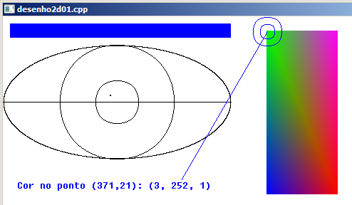

Curso completo de DarkGdk
Gameprog - Escola de programação de jogos digitais
Contato: gameprog.br@gmail.com
Fase 5.3
05.3 Desenho 2D
05.2 Visão geral
Nesta seção vamos aprender a usar as funções que desenham caixas, círculos,
elipses e demais funções básicas de desenho 2D.
Testando funções de bitmap

// desenho2d01.cpp
// Esse programa testa funções de desenho 2d
#include "DarkGDK.h"
void initsys(); // inicializa o sistema
void tst_desenho2d(); // Testa funções 2d
// Cores
const int nPreto = 0;
const int nBranco = 0xFFFFFF;
// ----------------------------------------------------------------------------
void DarkGDK ( void ) {
// Começo da aplicação DarkGdk
initsys();
while ( LoopGDK ( ) ) {
tst_desenho2d();
dbSync ( );
} // fim do while
return;
} // fim da função: DarkGDK
// ----------------------------------------------------------------------------
void initsys() {
// Esta função inicializa o sistema
dbSyncOn( ); dbSyncRate (60);
dbCLS(nBranco);
dbSetWindowTitle("desenho2d01.cpp");
} // fim da função: initsys()
// ----------------------------------------------------------------------------
void tst_desenho2d() {
// variáveis de trabalho
char txt[255];
int cor, r, g, b;
int x = 371, y = 21;
// Elenco de cores básicas
int nAzul = dbRGB(0,0,255);
int nVerde = dbRGB(0,255,0);
int nVermelho = dbRGB(255,0,0);
int nMagenta = dbRGB(255,0,255);
dbInk(nPreto, nBranco);
// Desenha olho com linha preta e fundo branco
dbCircle(160,120,80);
dbCircle(160,120,30);
dbEllipse (160,120,160,80);
dbLine (0,120,320,120);
// Desenha um pontinho no olho
dbDot(150,110); dbDot(151,110);
dbDot(150,111); dbDot(151,111);
// Desenha sobrancelha azul
dbInk(nAzul, nBranco);
dbBox (10,10,320,30);
// Desenha caixa multicolorida
dbBox (370,20, 470,250, nAzul, nVerde, nVermelho, nMagenta);
// Verificação de cor de determinado ponto (x,y);
cor = dbPoint (x, y);
r = dbRGBR(cor);
g = dbRGBG(cor);
b = dbRGBB(cor);
sprintf (txt, "Cor no ponto (%d,%d): (%d, %d, %d)", x, y, r, g, b);
// Sinaliza o ponto verificado
dbCircle (x,y,20); dbCircle (x,y,10); dbLine (x,y,250,230);
dbText (20,230, txt);
} // fim tst_desenho2d()
Desenhando pontos
// Desenha um pontinho no olho
dbDot(150,110); dbDot(151,110);
dbDot(150,111); dbDot(151,111);
A função dbDot() desenha um ponto na coordenada (x,y) especificada. A cor
do ponto é dada pela função dbInk(), isso vale para as demais funções 2D
incluindo funções de texto.
Desenhando quadrados e retângulos
// Desenha sobrancelha azul
dbInk(nAzul, nBranco);
dbBox (10,10,320,30);
dbBox (nEsquerda,nTopo,nDireita,nFundo);
A função dbBox() desenha uma caixa a partir das coordenadas especificadas:
(nEsquerda, nTopo) - ponto inicial da caixa
(nDireita, nFundo) - ponto final da caixa
Desenhando uma caixa multicolorida
// Desenha caixa multicolorida
// Elenco de cores básicas
int nAzul = dbRGB(0,0,255);
int nVerde = dbRGB(0,255,0);
int nVermelho = dbRGB(255,0,0);
int nMagenta = dbRGB(255,0,255);
dbBox (370,20, 470,250, nAzul, nVerde, nVermelho, nMagenta);
A função dbBox() tem uma segunda sintaxe que permite desenhar uma caixa
multicolorida. Basta você incluir no conjunto de argumentos 4 números
inteiros que representam cores.
Desenhando círculos
dbCircle(160,120,80);
dbCircle(xpos,ypos,nraio);
A função dbCircle() desenha um círculo na posição especificada (xpos, ypos)
com um raio do tamanho nraio.
Elipses
dbEllipse (160,120,160,80);
dbEllipse (xpos,ypos,xraio,yraio);
A função dbEllipse() desenha uma elipse na posição especificada pela coordenada
(xpos, ypos). O largura ou raio horizontal é definido por xraio, e a altura ou
raio vertical é definido por yraio.
Manipulando cores dentro do padrão RGB
int nVermelho = dbRGB(255,0,0); // (R) red
int nVerde = dbRGB(0,255,0); // (G) green
int nAzul = dbRGB(0,0,255); // (B) blue
A cor é representada por um número inteiro de 24 bits cuja faixa de valor
varia de 0 a 16.777.216; a função dbRGB(nRed, nGreen, nBlue) combina as
taxas de vermelho, verde e azul passadas como argumentos e retorna um
valor integral de 24 bits.
Existe a necessidade contrária de a partir desse número integral obter
isoladamente as taxas de vermelho, verde e azul. Isso é obtido através
das funções abaixo:
nVermelho = dbRGBR(nCor); // Obtém a taxa de vermelho
nVerde = dbRGBG(nCor); // Obtém a taxa de verde
nAzul = dbRGBB(nCor); // Obtém a taxa de azul.
Lembramos que a faixa limite de valor das taxas é um número de 8 bits
e vai de 0 a 255.
Descobrindo a cor de um ponto na tela ou imagem
// Verificação de cor de determinado ponto (x,y);
cor = dbPoint (x, y);
r = dbRGBR(cor);
g = dbRGBG(cor);
b = dbRGBB(cor);
sprintf (txt, "Cor no ponto (%d,%d): (%d, %d, %d)", x, y, r, g, b);
// Sinaliza o ponto verificado
dbCircle (x,y,20); dbCircle (x,y,10); dbLine (x,y,250,230);
dbText (20,230, txt);
A função dbPoint() retorna um valor inteiro de 24 bits correspondente ao ponto
da posição especificada (x,y). É uma função interessante porque com ela você
pode realizar uma verificação de colisão baseado na cor encontrada, por exemplo,
se seu jogador tropeçou numa mancha verde ele perde energia por expor-se a
material radioativo.
Outro recurso valioso que pode ser implementando usando dbPoint() é o
escaneamento da tela ou de um bitmap para copiá-lo para outra parte ou
gravá-lo em arquivo.
// Sinaliza o ponto verificado
dbCircle (x,y,20); dbCircle (x,y,10);
Sinalize os pontos para desenhar linhas, quadrados, textos com círculos. Isso
permite a assimilação rápida dos melhores ajustes para o posicionamento
final dos seus objetos.